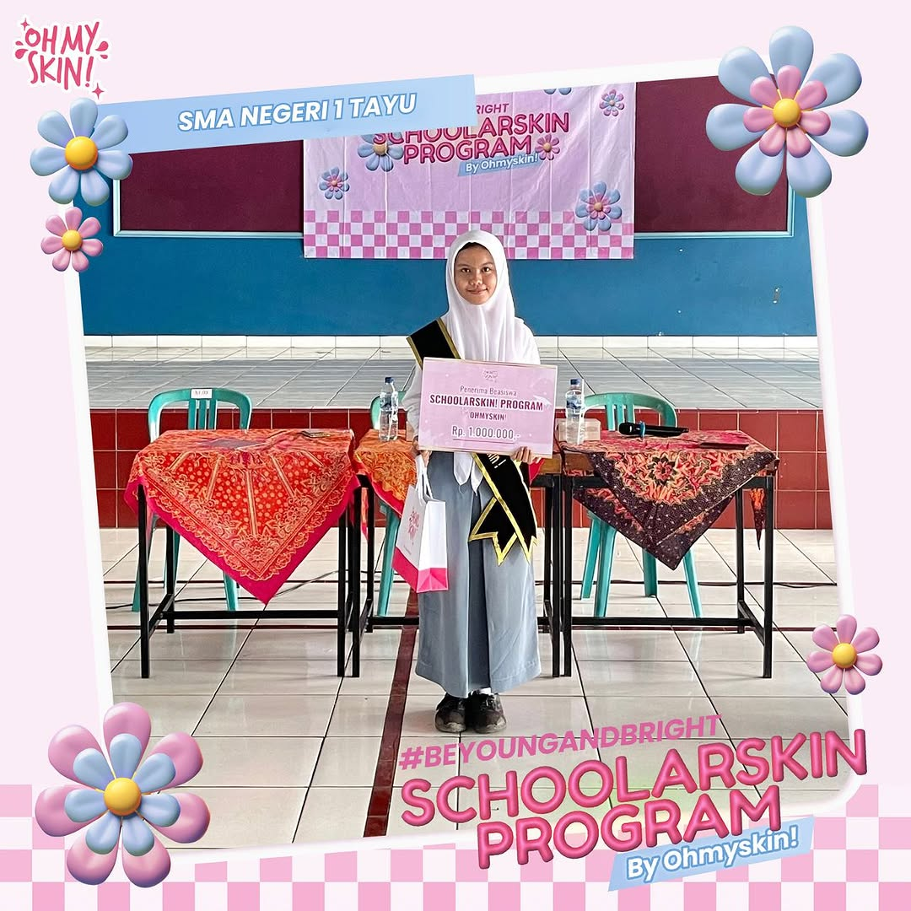
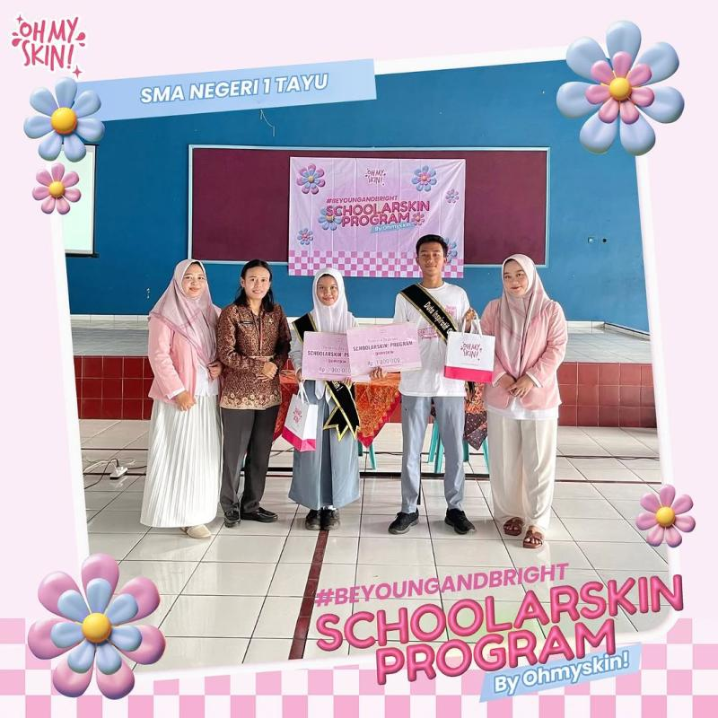
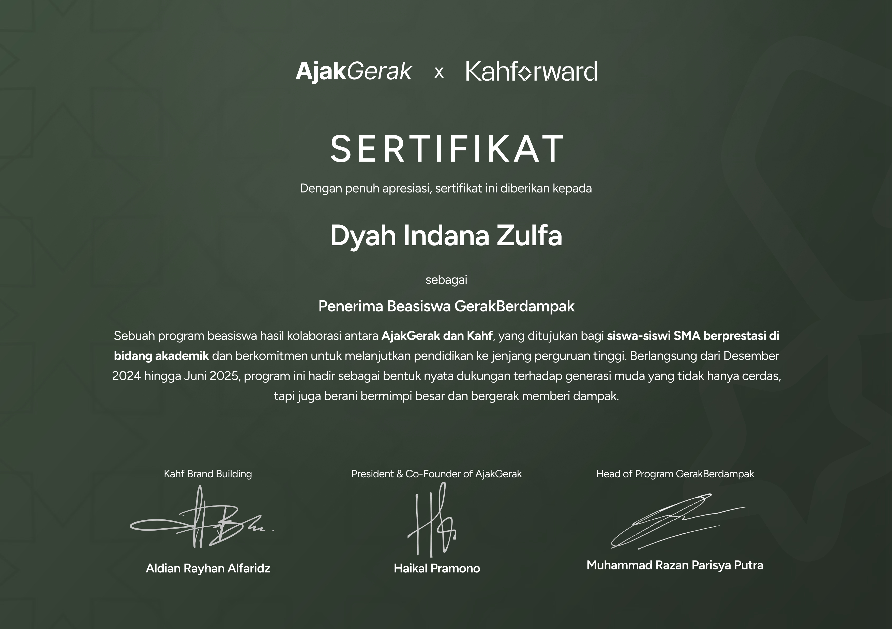
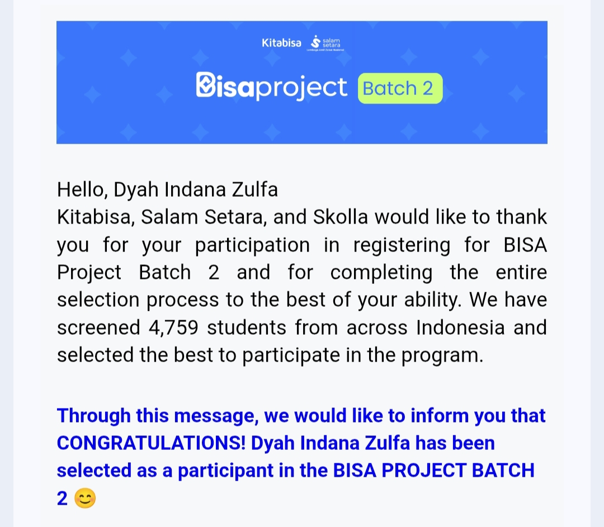
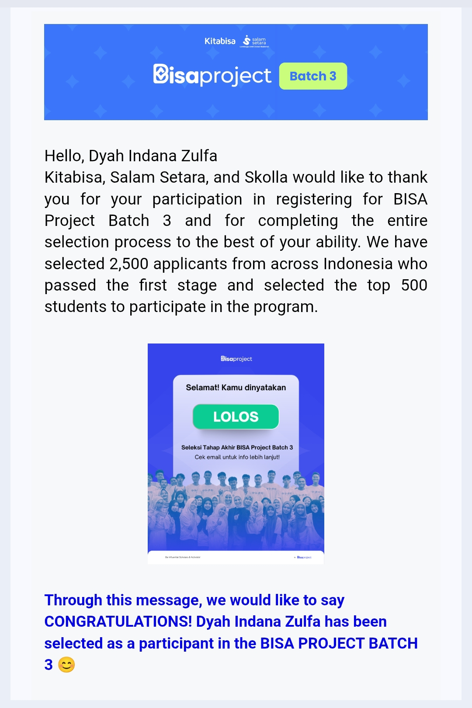

Competitive National Selections & Personal Development Achievements
Recipient of the Schoolarskin Scholarship, a selective educational grant program initiated by Oh My Skin. I was chosen as one of only two awardees from my school through the regular admission pathway.
Award Period: December 2025
Scholarship Components:


Selected as one of 49 awardees from over 950 national applicants in the GerakBerdampak Scholarship program by AjakGerak x Kahforward. The program supports high school students preparing for higher education through academic mentoring and structured guidance.
Program Duration: December 2024 – May 2025
Program Highlights:

Chosen as one of 2,000 awardees from 4,759 applicants in BisaProject 2, a national-scale university entrance and personal development program by Kita Bisa & Salam Setara.
Program Duration: January 2025 – June 2025
Program Components:

Re-selected as one of 500 awardees from 8,585 applicants in BisaProject 3, demonstrating continued academic commitment and competitive selection performance.
Program Duration: January 2026 – June 2026 (Ongoing)
Program Components:
